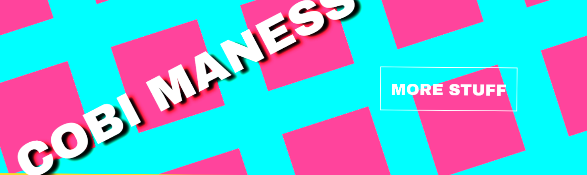

Portfolio
I had alot of fun doing this site, it was basically like an empty canvas that I could do anything I wanted to do to it
Its like a fifty shades of grey type thing but without the kinkiness
Magnetic
I was practicing using a precreated template and added some hover flair to it.
HTML CSS
W A V E S
This was my first time really testing what I could do in Photoshop.
PHOTOSHOP
NES
i like making ads so when this was brought up I trid to make it stand out with somewhat
of an underlaying meaning to it if you can't tell

Epilouge
I loved this one because of the colors
HTML CSS